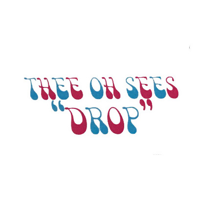
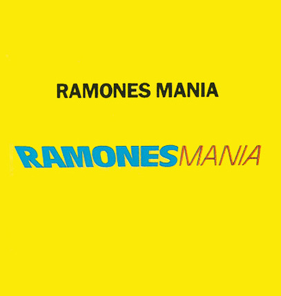

Deep Purple - Shades of Deep Purple (1968)
Deep Purple - Shades of Deep Purple (1968) Tracklist
A1."And the Address” (instrumental)
A2. “Hush”
A3. “One More Rainy Day”
A4. “Prelude: Happiness/I’m so Glad”
B5. “Mandrake Root”
B6. “Help!”
B7. “Love Help Me”
B8. “Hey Joe”
Source Discogs.com

Thee Oh Sees - Drop (2014)
Tracklist
A1. "Penetrating Eye”
A2. “Encrytped Bounce”
A3. “Savage Victory”
A4. “Put Some Reverb on My Brother”
B1. “Drop”
B2. “Camera (Queer Sound)”
B3. “King’s Nose”
B4. “Transparent World”
B5. “The Lens”
Source Discogs.com
Tracklist
A1. "Penetrating Eye”
A2. “Encrytped Bounce”
A3. “Savage Victory”
A4. “Put Some Reverb on My Brother”
B1. “Drop”
B2. “Camera (Queer Sound)”
B3. “King’s Nose”
B4. “Transparent World”
B5. “The Lens”
Source Discogs.com
 Black Magick SS - Hidden in plain sight (2015)
Black Magick SS - Hidden in plain sight (2015) Tracklist
A1. “Hidden In Plain Sight”
A2. “Black Magick Army”
B1. “Wisdom Tree”
B2. “War Of The Sorcerer”
Source Discogs.com
 Jimi Hendrix Experience - Are you Experienced (1967)
Jimi Hendrix Experience - Are you Experienced (1967) Tracklist
A1. “Purple Haze”
A2. “Manic Depression”
A3. "Hey Joe"
A4. "Love Or Confusion"
A5. "May This Be Love" A6. "I Don't Live Today" B1. “The Wind Cries Mary”
B2. “Fire”
B3. "Third Stone From The Sun"
B4. "Foxy Lady"
B5. "Are You Experienced?"
Source Discogs.com
 Mad Professor - Psychedelic Dub (1990)
Mad Professor - Psychedelic Dub (1990) Tracklist
A1. “Cool Runnings Mandela”
A2. “Go Deh Nelson, Go Deh”
A3. "In King David's Style"
A4. "Don't Drink The Piss"
A5. "1990 Ariwa Style" B1. “Psychedelic Dub”
B2. “Bammie' Riff”
B3. "Raging Storm"
B4. "Open Troppen"
B5. "Man From Senegal"
Source Discogs.com
Satan's Mercenaries - Assassination (2020)
Tracklist
A. "Blood Magic"
B. "The Fulfillment"
Source Discogs.com
Tracklist
A. "Blood Magic"
B. "The Fulfillment"
Source Discogs.com
 Christian Bland & The Revelators - The Lost Album (2010)
Christian Bland & The Revelators - The Lost Album (2010) Tracklist
A1."Don't Talk Today"
A2."Jabberwocky"
A3."Flashing Signs"
A4."I See You"
A5."Emotionless Man"
A6. "Ho Chi Minh"
A7 "Katy"
A8 "Icy Gray"
B1 "Wishing Well"
B2 "Psychic Haze"
B3 "Tallahassee Lassie"
B4 "Don't Talk Today Pt.2"
B5."Murder At My La"
Source Discogs.com
 Gap Dream - Self Titled (2016)
Gap Dream - Self Titled (2016) Tracklist
A1."Greater Find:
A2."Rock And Roll:
A3."College Music:
A4."24 Hour Token:
A5."Party Foul"
A6."Jacky"
B1."153"
B2."Golden Shoes"
B3."Modern Rhythms"
B4."Judy Let Me Roam"
B5."Shy Boy"
B6."A Stranger To Myself"
Source Discogs.com
 DJ Lenin - First Vision (1998)
DJ Lenin - First Vision (1998) Tracklist
A1. "Zirrex Cosmic Illusion"
A2. "F.U.Z."
A3. "Galaxian Upstream"
A4. "Acidoohunculus"
B1. "J.E.J. (Where R. U. RMX)"
B2. "Aqua"
B3. "Transdriver Crash"
B4. "Project Bee"
Source Discogs.com
 Nico and The Velvet Underground - The Velvet Underground & Nico (1967)
Nico and The Velvet Underground - The Velvet Underground & Nico (1967) Tracklist
A1."Sunday Morning"
A2."I'm Waiting For The Man"
A3."Femme Fatale"
A4."Venus In Furs"
A5. "Run Run Run"
A6. "All Tomorrow's Parties"
B1. "Heroin"
B2. "There She Goes Again"
B3. "I'll Be Your Mirror"
B4. "The Black Angel's Death Song"
B5. "European Son TO Delmore Schwartz"
Source Discogs.com
 Black Flag - Live '84 (1985)
Black Flag - Live '84 (1985) Tracklist
A1. “The Process Of Weeding Out”
A2. “Nervous Breakdown”
A3. “I Can't Decide”
A4. “Slip It In”
A5. “My Ghetto”
A6. “Black Coffee”
A7. “I Won't Stick Any Of You Unless And Until I Can Stick All Of You”
A8. “Forever Time”
A9. “Fix Me”
B1. “Six Pack”
B2. “My War”
B3. “Jealous Again”
B4. “I Love You”
B5. “Swinging Man”
B6. “Three Nights”
B7.“Nothing Left Inside”
B8. “Wound Up”
B9. “Rat's Eyes”
B10. “The Bars”
Source Discogs.com
Emergenze - Incontrollabile Realta, 1989 , Source Discogs.com
 Brody's Militia - Chainsaw Punk Hits, 2009 , Source Discogs.com
Brody's Militia - Chainsaw Punk Hits, 2009 , Source Discogs.com

Ramones - Ramones Mania, 1987, Source Discogs.com
 Muro - Ataque Hardcore Punk, 2017 , Source Discogs.com
Muro - Ataque Hardcore Punk, 2017 , Source Discogs.com
Iggy Pop - Soldier, 1980, Source Discogs.com
 The Mumbles - Raydean, 1989 , Source Discogs.com
The Mumbles - Raydean, 1989 , Source Discogs.com
 Corrosion of Conformity - Eye for an eye, 1984 (rereleased in 2012) , Source Discogs.com
Corrosion of Conformity - Eye for an eye, 1984 (rereleased in 2012) , Source Discogs.com
 Cold Brats - Punk in the digital age Vol.1, 2019 , Source Discogs.com
Cold Brats - Punk in the digital age Vol.1, 2019 , Source Discogs.com
 Gang of Four - 4.5 Fabrik, 1981 , Source Discogs.com
Gang of Four - 4.5 Fabrik, 1981 , Source Discogs.com
 Bad Brains - Bad Brains, 1982 , Source Discogs.com
Bad Brains - Bad Brains, 1982 , Source Discogs.com
 Gato Negro - Black Cat Dub, 1991 , Source Discogs.com
Gato Negro - Black Cat Dub, 1991 , Source Discogs.com
 Roots Rock Reggae Compilation, 1976 , Source Discogs.com
Roots Rock Reggae Compilation, 1976 , Source Discogs.com
 Bob Marley & the Wailers - Exodus, 1976 , Source Discogs.com
Bob Marley & the Wailers - Exodus, 1976 , Source Discogs.com
 Jaemin Lee - God of Reggae, 2017 , Source Discogs.com
Jaemin Lee - God of Reggae, 2017 , Source Discogs.com
 Patra & Tony Rebel - Free Di youth/teach the children (Positively Reggae), 1994 , Source Discogs.com
Patra & Tony Rebel - Free Di youth/teach the children (Positively Reggae), 1994 , Source Discogs.com
 Maffi - Killah Tape EP, 2015 , Source Discogs.com
Maffi - Killah Tape EP, 2015 , Source Discogs.com
Gregory Issacs - Night Nurse, 1982 , Source Discogs.com
 Negril Chill by Yellowman, 1990 , Source Discogs.com
Negril Chill by Yellowman, 1990 , Source Discogs.com
 Mushapata - Brakka Reggae: Generation Sacrifiee , Year unknown , Source Discogs.com
Mushapata - Brakka Reggae: Generation Sacrifiee , Year unknown , Source Discogs.com